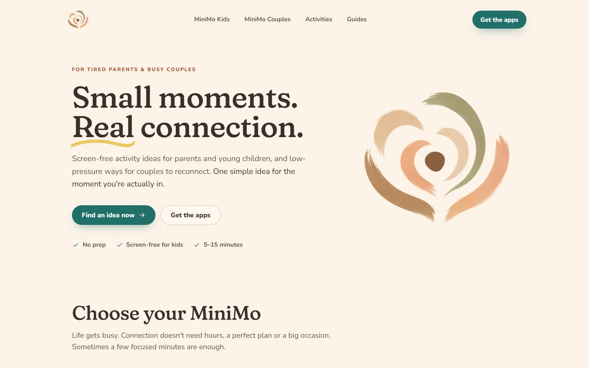
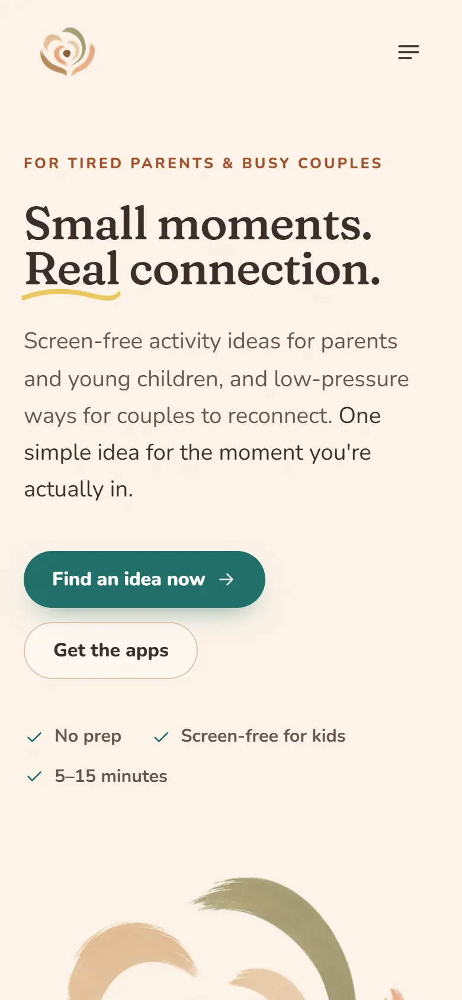

The brand already had its best asset: a soft watercolor logo. The design system starts there. The page background is the exact cream of the logo, and the palette is pulled from its brush strokes: peach, clay, sage, and a warm mimosa yellow. One deep teal is the only color used for actions, so every button and link reads the same way across the site. Kids pages lean peach and clay, Couples pages lean sage and mimosa, so you always know which app a page is about.
Headings are set in Fraunces, a soft serif, and body text in Nunito, a rounded sans that matches the apps themselves. A light paper grain sits over the page, the hero headline gets a hand-drawn underline, and the logo is used as decoration rather than just a mark. Every color pair has its contrast ratio written next to the design token, and the teal measures 5.6:1 against the cream.

Parents don't browse an activity library at 5 pm. They want one idea that fits right now. The Moment Picker asks a few quick questions: for kids, where you are, your child's mood, and how much energy you have left, with an optional step for age, time, supplies, and whether everyone has to stay seated. For couples, it asks about energy and mood. It returns three ideas, then a gentle invitation to try the app. The free library is never locked.
The first version ranked every activity and always returned something, which meant suggesting a craft to a parent in a car. The rework treats the answers as hard limits instead of preferences, and when nothing fits it says so honestly instead of guessing. The matching logic has its own tests, so new activities can't quietly break it.

The new site is a static export: plain HTML that loads fast and has no server or database to maintain. All 41 saved WordPress URLs still work, and old feeds and archive pages send visitors to their new equivalents with permanent redirects. The 30 original featured images were restored byte for byte. Articles are now published through a JSON import that has to be approved before anything goes live, so nobody needs WordPress to add an activity.
Search was planned with the build. Every page carries connected structured data: the organization, the website, both apps as mobile applications for iOS and Android, articles, FAQs, and breadcrumbs. A check script audits every built page for title length, description length, and markup. The site also names AI crawlers in its robots file and publishes an llms.txt.
Search Console reported 36 sitemap errors after the move, because WordPress dates had no time zone. A small date formatter fixed all of them. Ahrefs didn't recognize articles marked up as two types at once, so they became plain Articles. Old feed and archive URLs started showing up as 404s, and each got a redirect. Cookie consent now uses Google Consent Mode, so the analytics tag only loads after a visitor accepts.
The old site was a theme with content poured into it. The new one looks like the apps, answers the question a tired parent is actually asking, and moved off WordPress without losing a single URL. The picker is the part I would show first: it's small, honest when it has nothing to offer, and it sends people to the apps without locking anything.
Visit the live site ↗